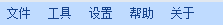
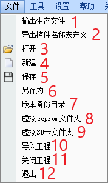
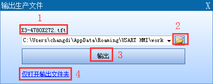
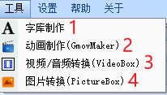
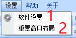
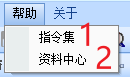
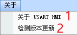

1.菜单栏

文件菜单

1.输出生产文件
该菜单用于输出编译生成的.tft类型文件。.tft文件用于做TF卡升级或外部设备串口升级使用。

1.1 生产输出的.tft文件，与项目工程文件同名。
1.2 在弹出的《输出生产文件》窗口窗口中，我们可以选择一个指定的目录用于存放输出的.tft文件。
1.3 选择《输出》按钮。将对项目进行编译后，生成新的.tft文件。并打开《输出文件夹》。
注意
如果《输出文件夹》已经存在同名的.tft文件，新生成的文件会覆盖旧文件。
注意
如果项目编译失败，将不会打开《输出文件夹》。请留意输出窗口的错误提示。
1.4 《仅打开输出文件夹》。不编译当前项目工程，直接打开《输出文件夹》。
小技巧
技巧：如果仅仅是想打开上次编译生成的文件，可以执行该操作。
- 2.导出控件名称宏定义
导出页面编号和控件编号的宏定义(.h文件,用于导入单片机工程中使用)
- 3.打开
打开一个.HMI工程文件。
- 4.新建
新建一个.HMI工程文件。
- 5.保存
保存当前正在编辑的工程文件。
- 6.另存为
将当前编辑的工程文件，另存为一个副本。
- 7.版本备份目录
打开backup文件夹。 backup文件夹下保存的工程文件为使用新版本USART HMI软件第一次打开旧版本工程文件之前自动备份的工程文件。
- 8.虚拟eeprom文件夹
打开eeprom文件夹。eeprom文件夹保存的文件是USART HMI软件在模拟运行工程中生成的虚拟eeprom文件。
- 9.虚拟SD卡文件夹
打开虚拟SD卡文件夹。虚拟SD卡文件夹保存的文件是USART HMI软件在模拟运行工程中使用到SD卡内的文件。
- 10.导入工程
将会导入另一个工程的所有页面。
- 11.关闭工程
关闭当前正在编辑的工程文件。
- 12.退出
退出USART HMI集成开发环境。
工具菜单

- 2.1字库制作
《字库制作》工具是USART HMI开发环境使用的专用字库制作工具。
参考：
- 2.2动画制作(GmovMaker)
《动画制作》工具是USART HMI开发环境使用的专用动画制作工具。
参考：
- 2.3视频/音频转换(VideoBox)
《视频/音频转换》工具是USART HMI开发环境使用的专用视频/音频制作工具。
参考：
- 2.4图片转换
《图片转换》工具是USART HMI开发环境使用的用于外部图片控件的工具
参考：
设置菜单

- 3.1软件设置
在该选项打开的窗口中，可以根据个人喜好对开发环境的各种参数进行配置。
- 3.2重置窗口布局
将开发环境的各项配置参数，窗口布局恢复到默认状态。
帮助菜单

- 4.1指令集
该菜单可以打开一个本地文档，该文档包含串口屏的关键文档描述。方便无法连接互联网的客户查阅资料。
注意
强烈建议客户使用在线版本资料中心的资料。因为离线版本并没有包含本资料中心的所有资源文档，同时可能由于资料更新不及时出现部分功能描述与软件功能不一致。
- 4.2 USART HMI 资料中心
该菜单会链接到在线网页版本的USART HMI 资料中心。
关于菜单

- 1.5.1关于USART HMI
该菜单用于查看软件版本信息。
- 1.5.2检测版本更新
该菜单用于连接服务器，检测软件是否有新版本。